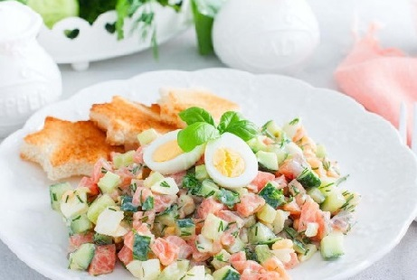

Ингредиенты:
Сёмга 100 гр, огурцы 2 шт, яйца 3 шт, сметана 3 стол.л., горчица готовая 0.25 чайн.л., укроп 10 гр, зелёный лук 10 гр, соль по вкусу.
Рецепт:
1. Подготовьте указанные ингредиенты для салата. Яйца нужно предварительно отварить около 10 минут в кипящей воде и охладить, оставив в холодной воде. Яйца можно взять куриные, а можно поделить и взять куриные и перепелиные, чтобы украсить готовый салат. Огурцы свежие, два средних. Сёмга слабосолёная, у меня покупная. Горчицу я беру русскую готовую, сметану можно заменить на натуральный йогурт. Подготовьте глубокую миску или салатник.
2. Свежие огурцы промойте проточной холодной водой и обсушите. Срежьте кончики и порежьте огурцы небольшими кубиками. Сложите нарезанные огурцы в подготовленную посуду для салата.
3. Слабосолёную сёмгу можно взять собственного посола, а можно приобрести в магазине, проверив сроки годности. Сёмгу срежьте со шкурки, уберите оставшиеся косточки и порежьте кубиками. Добавьте нарезанную рыбу в салатник.
4. Предварительно отваренные и охлаждённые яйца очистите от скорлупы и порежьте кубиками. Если будете использовать перепелиные яйца, то для салата их порежьте, а одно - два яйца разрежьте пополам, для украшения салата. Добавьте нарезанные яйца в салат.
5. Для салата можете взять любую зелень по своему вкусу. Я взяла пару стрелок лука, укроп, веточку петрушки. Свежую зелень тщательно промойте проточной холодной водой и либо обсушите в сушилке для зелени, либо стряхните жидкость с листьев. Мелко порежьте зелень и добавьте в салат.
6. Сметану смешайте с горчицей и добавьте щепотку соли (лучше потом подсолить, рыба всё-таки солёноватая). Перемешайте соус и заправьте им салат.
7. Салат перемешайте и сразу подавайте к столу - такой салат не рекомендуется долго оставлять заправленным (даст сок) и хранить в холодильнике. Салат может быть полноценным полезным ужином. Для более плотной трапезы к такому салату можно предложить блюда из картофеля - отварного, жареного, пюре.
Готово! Приятного аппетита!

14 ноября, 2022 года.